| 1938 |
By taking part in construction of the road Sarajevo-Ilidža
with two towing vehicles, Stjepan Martinović as a private
entepreneur, for the first time offers service of transport and
in that way initiates active role of the family Martinović in transport
activity which will be successfully continued in decades to come.
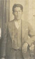  |
| |
| 1943-1945 |
During the WWII towing vehicles were confiscated for military
needs and later discarded. After conclusion of war almost all
property of the company was confiscated due to nationalisation
process.
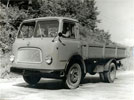 |
| |
| 1966 |
After conclusion of education as mechanic, Vinko Martinović
at age of 21, in second generation starts a new chapter of
transport tradition by buying first truck type TAM 4500B (Avala).
During the next three years this truck was used mostley for
services of the construction materials in the
wider area of Sarajevo.
  |
| |
| 1970 |
Transfer to dumper truck Csepel 420, increases efficiency
and capacity. The accent of engagement is still about answering
transport needs for construction and city rebuilding.
 |
| |
| 1975 |
Purchase of the truck Fiat 697 with a trailer, shifts the focus
of dealing from local to national transport. During that period
logistic services were provided for the needs of industry where
wide consumption goods are transported next to
construction materials.
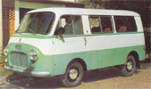 |
| |
| 1976 |
First van vehicle type Zastava 1300TF becomes a part of
vehicle fleet which is moslty beeing used as a service vehicle.
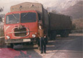  |
| |
| 1980 |
Transport capacities increase with procurement of the
truck Fiat 682 which is used usually in combination with trailer
for transport of the construction materials to as well as from
Ploče and Metković Harbor's.
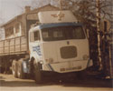 |
| |
| 1982 |
Next to Fiat 693 vehicle fleet expands with a nine meters long
dumper-semitrailer which is used for dispersed cargo transport
for the needs of quarry`s.
 |
| |
| 1984 |
With the purchase of the light truck Zastava 645AD begins
supply of the logistic services and distribution in the wider
area of former State, moslty for the needs of food industry.
 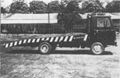 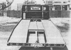 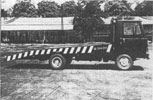 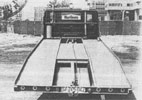 |
| |
| 1987 |
With the procurement of the another light truck Zastava 640 and
self-processing of that vehicle from box truck to tow truck, the
range of supply was enriched and with this vehicle international
transport was conducted for the first time.
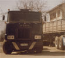 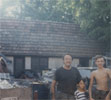  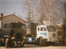 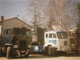 |
| |
| 1988 |
Vehicle fleet was enriched with MACK F-700 truck which was
used mostly for special transports from forge's Zenica and Ilijaš as
well as for car and military industry of Famos.
   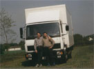 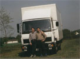 |
| |
| 1992-1995 |
In the war period the whole vehicle fleet of the company was
destroyed or confiscated for military use, and because of the war
activities in immediate surroundings, family Martinović abandons
Sarajevo and continues to conduct transporting business partly in
Republic of Croatia and partly in Germany.
 |
| |
| 1996 |
By acquisition of van Mercedes-Benz 307D transport tradition
continues in third generation and parallel to that market activity
begins under the title Sprinter-Sarajevo, whereby right from
beginning accent was placed on international transport's
with van vehicle's.
 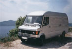 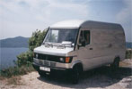  |
| |
| 1998 |
With a purchase of van Mercedes-Benz 310D, modernization
was conducted for the purpose of rising quality of services and
parallel to that the area of dealing expands to France and Spain.
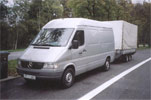 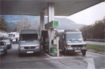 |
| |
| 2002 |
The Mercedes-Benz Sprinter 312D becomes second motor unit in the
company's vehicle fleet, which enables considerable increase in capacity,
taking in account possibility of the vehicle to be combined with a trailer,
which will be acquired already next year.
  |
| |
| 2004 |
Another Mercedes-Benz Sprinter 312D was included in the line of vehicles,
this time in an extended version suitable for voluminous merchandise which
is usually transported for providing logistical support to car industry, which
becomes one of the company's main tasks.
 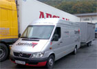 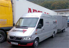 |
| |
| 2006 |
Beacuse of the market increase in demand for efficient
transport systems, vehicle fleet capacity rises to four vehicles.
This time it is Mercedes-Banz Sprinter 316CDI van.
  |
| |
| 2007 |
For the first time since company's founding we become
proud owner of a new cargo vehicle Mercedes-Benz 318CDI,
with which vehicle fleet rises to five active motor units.
At the same time we follow advancing awareness for preservation
of the environment by investing in most developed and
ecologically acceptable technologies. |


.jpg)